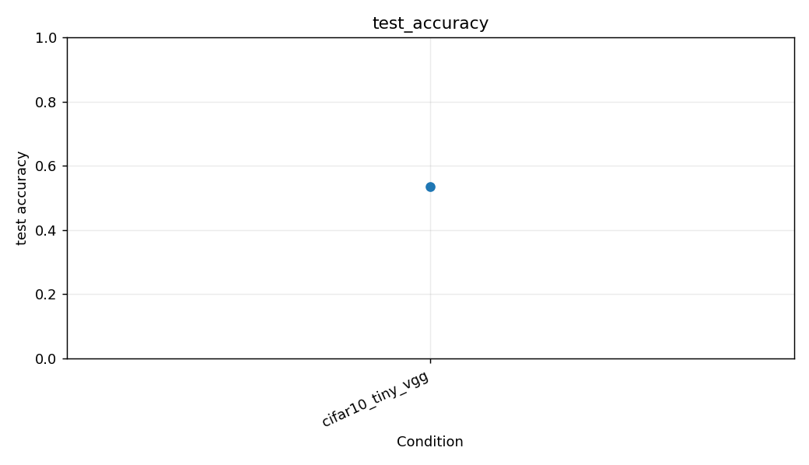
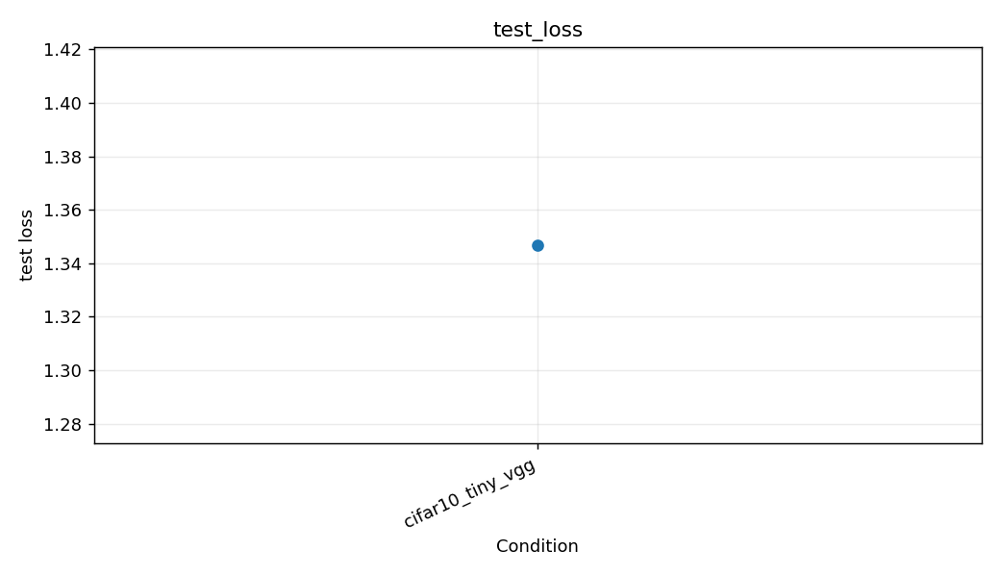
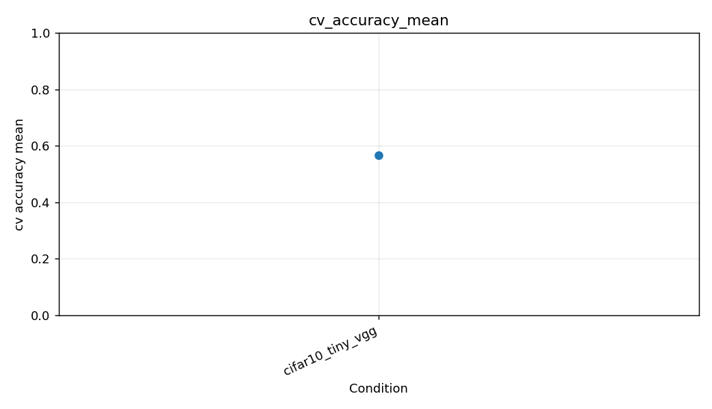
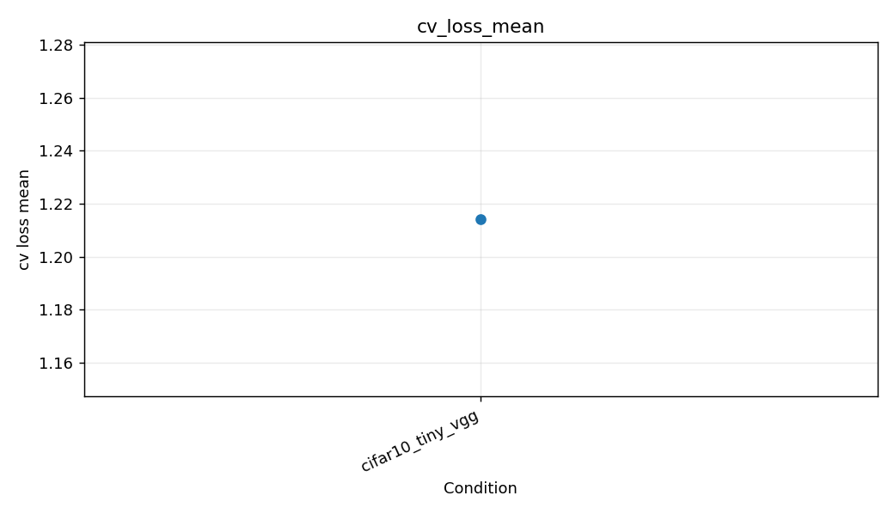
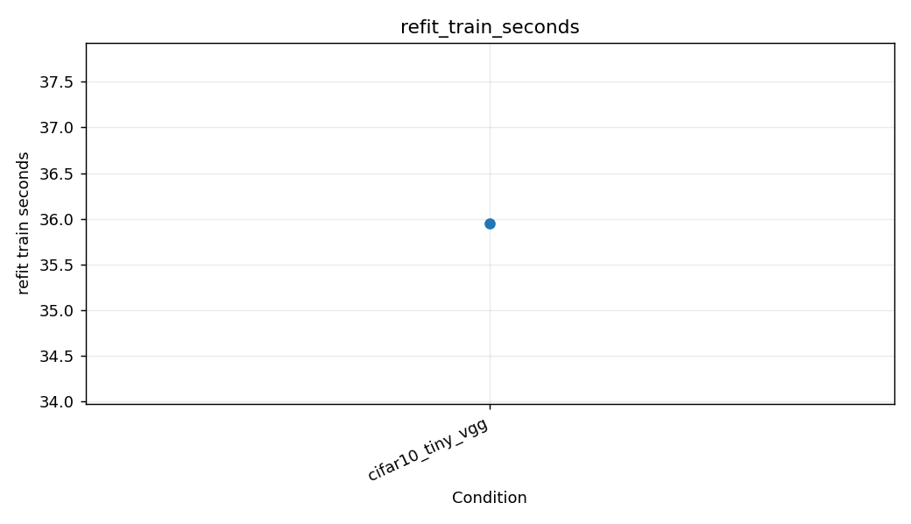
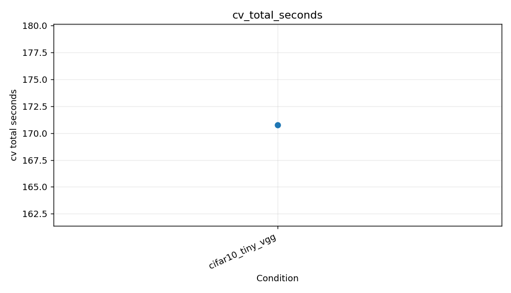
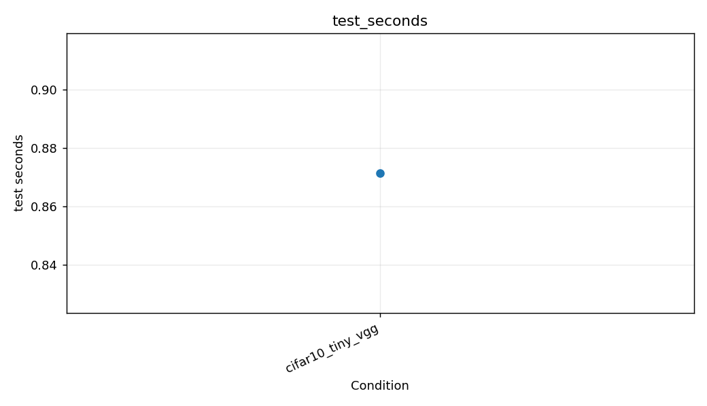

같은 도메인의 고정 test_hash와 시험 이미지 2000장을 유지합니다. 모든 조건은 사전학습 없이 새 가중치로 시작합니다. 시간은 같은 장치에서 순차 실행한 값으로 비교하세요.
| name | domain | model | n_train_pool | n_fold_train | n_test | cv_loss_mean | cv_accuracy_mean | cv_accuracy_std | selected_epochs | test_loss | test_accuracy | test_macro_f1 | cv_total_seconds | refit_train_seconds | test_seconds | test_ms_per_image | parameters |
|---|---|---|---|---|---|---|---|---|---|---|---|---|---|---|---|---|---|
| cifar10_tiny_vgg | cifar10 | tiny_vgg | 8000 | 6400 | 2000 | 1.2143 | 0.56587 | 0.024217 | 5 | 1.3469 | 0.536 | 0.52304 | 170.78 | 35.953 | 0.87151 | 0.43576 | 72954 |







CV loss 기준 조건: cifar10_tiny_vgg. 이 선택에 test loss/accuracy는 사용하지 않았습니다.
CSV는 UTF-8 BOM으로 저장되어 Excel에서 열 수 있습니다. 정확도는 0~1 비율입니다. test_seconds는 이미 메모리에 읽힌 이미지의 변환·배치 전달·추론·출력 수집 시간을 포함하며, 모델 로딩·초기 2회 warm-up·그림 저장·브라우저 렌더링은 제외합니다.